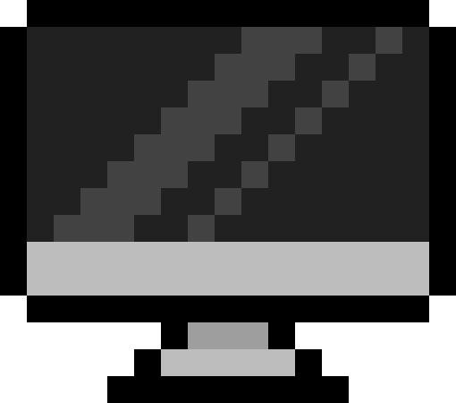

▶ 経験した言語・スキル
HTML
CSS
JavaScript
PHP
MySQL
基礎の習得
▶ 前職のスキル・強み
要件整理・運用設計
品質保証・監査対応
マニュアル・標準化
現場教育・定着支援
不具合調査・改善
DX化主導
▶ 訓練課題（HTML / CSS / JavaScript / PHP / MySQL）
▼
+80Exp
HTML,CSSを用いたリフォームサイト制作
かかった時間：45時間
▼
+80Exp
JavaScriptをメインに台湾観光サイト制作(グループワーク)
かかった時間：45時間×4人
▶ 自主制作物
▼
+80Exp
JavaScriptを用いた電卓の作成
かかった時間：5時間
▼
+80Exp
ランダムカラーコード
かかった時間：3時間
▼
+100Exp
くじ引き
かかった時間：4時間
▶ Exp ― 経験値
Lv
1
未経験
exp
0/ 600
制作物を見ていくとExp(経験値)が手に入り、レベルアップしていきます。
レベルマックスとレベルリセット(機能確認したい方用)
▶ ゲーム部分
ゲーム説明 ：ポートフォリオの作成物を閲覧すると経験値が入手できます。
経験値をためて敵を倒そう。
作者 lv.1
30/ 30
V.S

習得の壁 lv.5
100/ 100